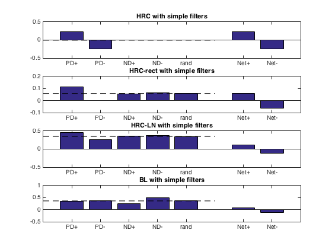
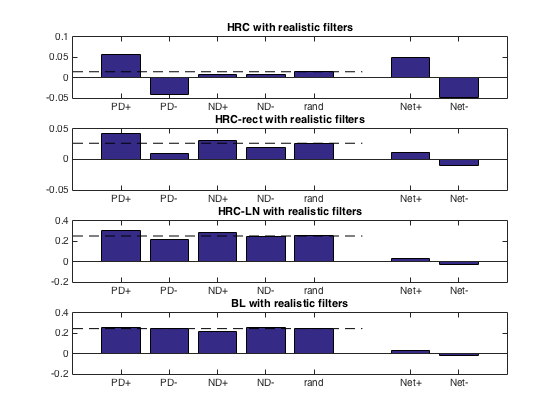
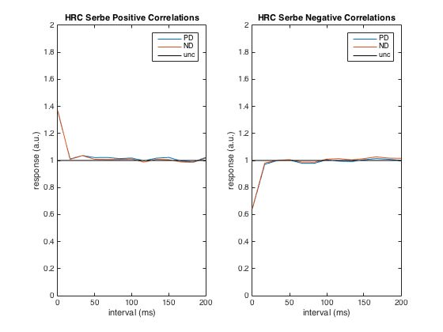
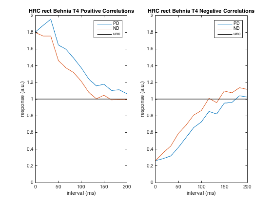
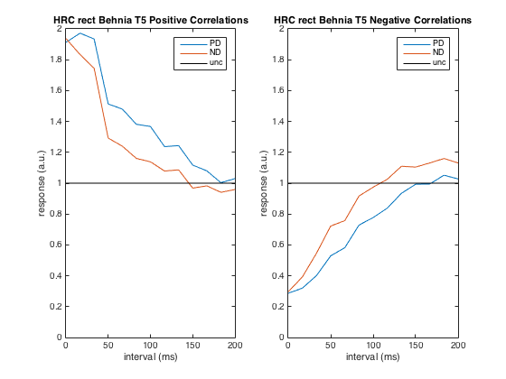

This is the readme for the matlab code associated with the paper:
Salazar-Gatzimas E, Chen J, Creamer MS, Mano O, Mandel HB, Matulis CA,
Pottackal J, Clark DA (2016) Direct Measurement of Correlation
Responses in Drosophila Elementary Motion Detectors Reveals Fast
Timescale Tuning. Neuron 92:227-239
This code was contributed by Damon Clark. The functions in this
folder will generate the model results from the paper.
To prepare to Run:
Download and extract this archive. Start matlab and add this folder
and subfolders to the path (navigate to this folder in matlab and run
"addpath(genpath('.'))"
Run:
ToyModels to generate Fig. 6B and Fig. S5A


DtSweeps to generate Fig. 6C and Fig. S5B


